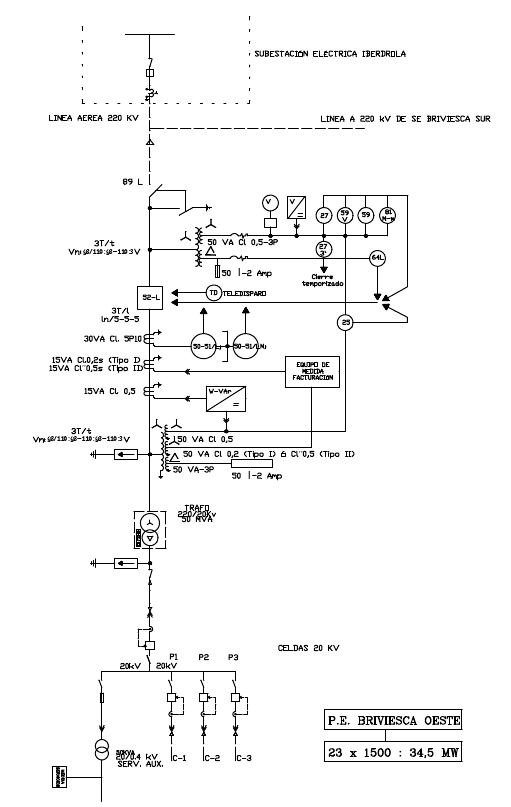

La Subestación eléctrica incluye el transformador que eleva la tensión de salida de los aerogeneradores, normalmente en Baja Tensión , 690 V, aunque también existen con salida en Media Tensión (entre 3KV y 5KV) hasta el nivel de la linea de evacuación, que suele ser en Alta Tension (> 110 KV), aunque pueden existir casos de conexión en Media Tensión ( > 30KV).
Generalmente, dependiendo de la extensión del Parque, la salida de cada aerogenerador dispone de un transformador elevador (tipicamente de 690 V a 15KV o 20 KV), con objeto de reducir las perdidas en los cables de conexión con el transformador de la Subestación.
En la Subestación se encuentran los dispositivos de corte (seccionadores e interruptores) que permiten conectar el transformador de la linea de evacuación, y las 'celdas' de operación, que, a su vez contiene los dispositivos de corte que permiten conectar y desconectar los cables que conectan con los transformadores de los aerogeneradores: esta funcionalidad es requerida para poder realizar trabajos que requieren la desactivación de algunos de estos cables.
Adicionalmente, y para cumplir con las normativas de operación, en la Subestación existen mecanismos de control estandard, que monitorizan: a) la frecuencia de la red; b) que la tensión esté dentro de determinados limites, c) las temperaturas de determinados elementos, etc.
En la siguiente figura se muestra el "diagrama unifilar" correspondiente a la Subestación del parque eólico de ejemplo. El concepto de "unifilar" corresponde a una representación simplificada en la que cada linea en el dibujo corresponde con los tres (solo las tres fases), o cuatro (tres fases y el neutro) hilos eléctricos de una linea trifásica.

En la parte superior se muestra la conexión con la línea (aérea en este caso) de conexión con la Red Eléctrica: en este caso a 220 KV.
Las conexiones con los aerogeneradores se concentra en tres lineas C-1, C-2, y C-3. La conexión de los aerogeneradores se realiza en "daisy chain": de uno al siguiente más próximo. A cada uno de los aerogeneradores le llega uno de estos cables, e internamente tienen dispositivos para su conexión/desconexión.
Estas lineas pueden ser en Media Tensión (como en este caso) con tensión entre 15KV y 30KV, aunque también existen parques eólicos donde los aerogeneradores están conectados a Baja Tensión (690V), que suele ser la salida del generador eléctrico. La conexión en Media Tensión encarece la instalación (transformadores en cada aerogenerador para elevar de 690V a Media Tensión), pero reduce las pérdidas de transmisión.
Entre la salida de Alta Tensión y las conexiones con los aerogeneradores se encuentran:
•El Seccionador "89 L". Este dispositivo tiene dos posiciones fijas: a) una en la que conecta el circuito inferior a la Red Eléctrica, y b) otra en la que este circuito está puesto a Tierra. La posición b) se utiliza para realizar operaciones de mantenimiento de la Subestación. Este dispositivo no puede ser operado (es decir, no se puede cambiar su posición de a) a b) o viceversa) si existe corriente o puede existir corriente a su través. Es decir, solo puede cambiar de posición si el Interruptor "52 L" esta abierto.
•El Interruptor "52 L" es el principal elemento de corte y conexión de la Subestación. Este dispositivo puede cambiar de estado en cualquier situación: es decir, puede abrirse teniendo conectados la Red Eléctrica (Seccionador "89 L" cerrado) y los aerogeneradores conectados (C-1, C-2 y C-3 cerrados) y en producción. Igualmente puede abrirse en estas mismas circunstancias.
•Existen transformadores de medida de tensión (220 KW a 110V) conectados a la Red Eléctrica (cuando "89 L" está cerrado) y transformadores de medida de corriente en cada fase.
•Los anteriores transformadores alimentan diversos elementos de protección ("relés") donde:
ose monitorizan la tensión y la corriente en cada fase con sus valores máximos,
ose calcula la potencia que circula por las lineas (de entrada - consumo - , salida - producción -), y
ose monitoriza la frecuencia de la Red. Un listado de estos relés se encuentra en Leyenda de los simbolos en el esquema unifilar. La salida de estos elementos de protección gobierna el mando del Interruptor "52 L". Este Interruptor también puede ser comandado desde el SCADA del Parque.
•Un transformador elevador, de 20 KV a 220 KV, en configuración triangulo/estrella, de forma que se aíslen los posibles desequilibrios entre fases.
•Elementos de protección contra sobre-tensiones.
•Un Seccionador seguido de un Interruptor que conecta con las "barras" de la Subestación a las que se conectan las conexiones con los aerogeneradores, a través de conjuntos de Seccionador + Interruptor.
El objetivo de estos conjuntos es el de poder desconectar una linea C-x, sin tener que desconectar las otras.